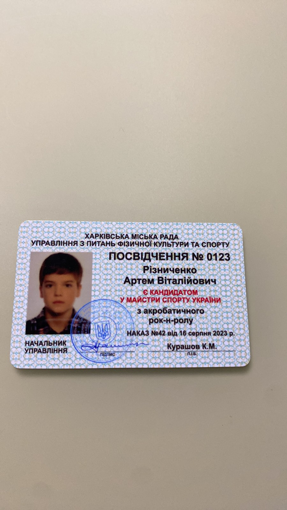
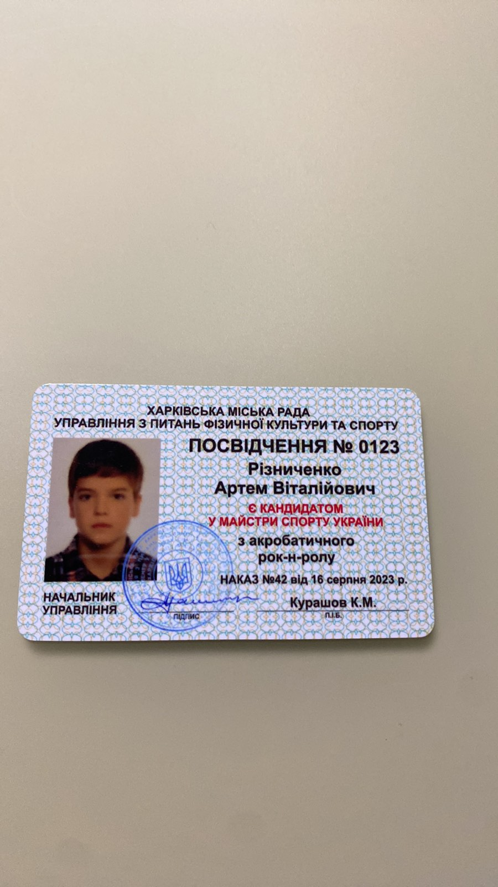

Футбол — это командный вид спорта, в котором две команды по 11 игроков стремятся забить мяч в ворота соперника, используя в основном ноги, голову и туловище (руками играть запрещено, за исключением вратаря в пределах штрафной площадки). Побеждает команда, которая забьёт больше голов за установленное время — обычно матч длится 90 минут и делится на два тайма по 45 минут. Футбол является самым популярным видом спорта в мире. Он объединяет миллионы болельщиков и игроков, крупнейшие соревнования, такие как чемпионаты мира и континентальные турниры, собирают огромные аудитории. Этот спорт развивает выносливость, координацию, командную работу и стратегическое мышление.
Танцювальна містить в собі акробатичні й танцювальні елементи. Акробатичні елементи можуть застосовувати в різних танцювальних напрямках: класичний танець, хіп-хоп, черлідінг і т.д
Я люблю рыбалку — это больше, чем просто хобби. Это время, когда я могу побыть наедине с природой, отвлечься от суеты и просто наслаждаться моментом. Тишина, вода, ожидание поклёвки — всё это даёт настоящее чувство покоя. Для меня рыбалка — это не только про улов, а про процесс, атмосферу и внутреннее равновесие.